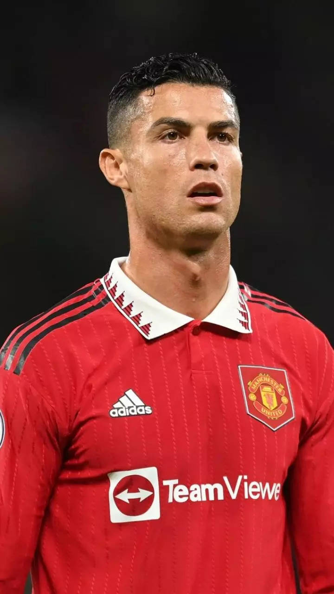

Manchester United
Let's talk Manchester...
Founded in 1878 as Newton Heath LYR Football Club, has a rich history. The club faced financial difficulties in its early years but survived, changing its name to Manchester United in 1902.United achieved success under Sir Matt Busby in the post-war period, winning the 1948 FA Cup and later the 1968 European Cup.
Renown Players
They include:
- CR7 Ronaldo- Emerged as a star at United, winning multiple honors before moving Real Madrid and later returning to the club in 2021.
- Eric Cantona- Influencial in the 1990s, playing a key role in United success.
- Ryan Giggs- The most decorated player in English football history, spent his whole career at United.
- Bobby Charlton- A club icon, part of the 1968 European Cup- winning team.
- George Best- A dazzling winger and Ballon d'Or winner in 1968.



twitter